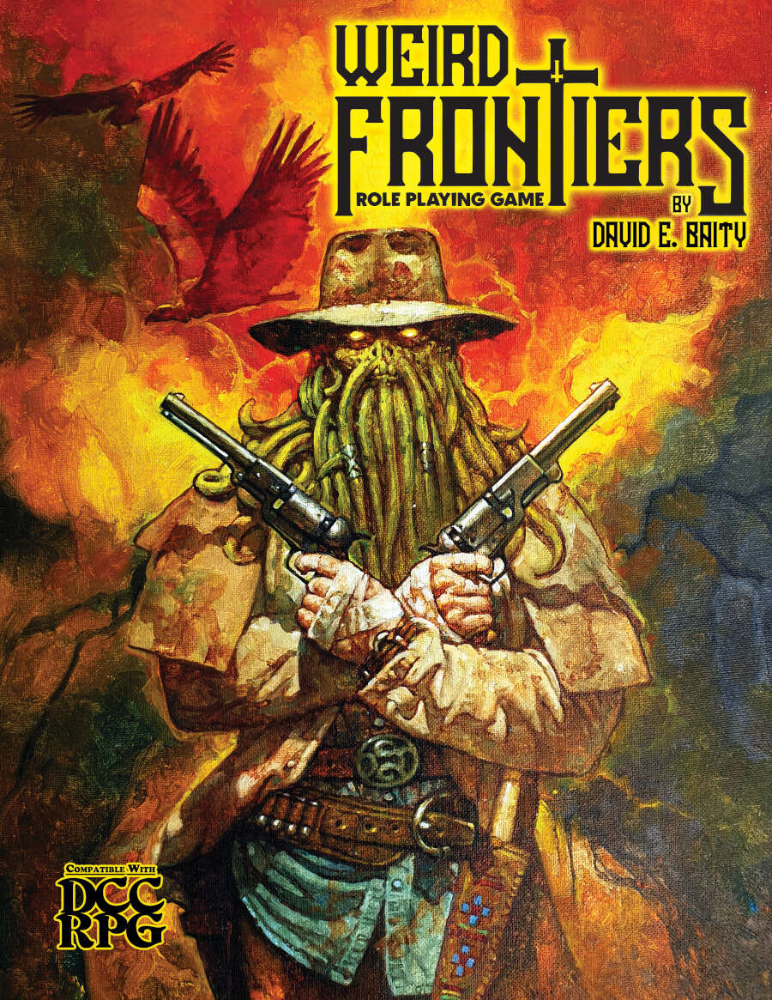

TRPG Review

Weird Frontiers
Weird Frontiers is a standalone tabletop role-playing game (TRPG) that combines the weird west genre with a
touch of Lovecraftian horror. The game's ruleset is compatible with the well-known Dungeon Crawl Classics
RPG by Goodman Games, allowing for a seamless integration of both systems.
The game's premise is set in an alternate history, where the aftermath of the American Civil War saw the
release of ancient evils and supernatural phenomena. Players take on the roles of heroes with special
abilities, granted by the power of awakened ley lines, as they strive to battle these dark forces and heal
their fractured nation.
Weird Frontiers features 12 distinct character classes, each with unique abilities and characteristics. Some
of these classes include the enigmatic Occultist, the formidable Gunslinger, the mysterious Hellbilly, and
the agile Calaveras. To fully engage with the game's mechanics, players need a standard deck of playing
cards, poker chips, a set of Zocchi dice, character sheets, and optionally, the Dungeon Crawl Classics RPG
for access to additional spells and resources.
The game employs a system of hit points, crit dies, and fumble dies that vary according to the character's
class and level, creating a dynamic and engaging combat experience. Characters can also specialize in
specific signature weapons, gaining proficiency in their use, while facing penalties for wielding unfamiliar
arms.
Players are invited to choose a path for their characters, either Righteous or Damned, which will dictate
their moral compass and guide their motivations throughout the game. As characters advance, they can earn
unique nicknames and titles reflecting their deeds and accomplishments.
One standout feature of Weird Frontiers is its captivating artwork. The black and white illustrations
perfectly capture the eerie atmosphere of a world where horror meets the wild west, adding an extra layer of
immersion to the game.
In summary, Weird Frontiers offers a unique gaming experience for those who enjoy a blend of supernatural
elements, horror, and the wild west setting. The game boasts a rich narrative, extensive world-building, and
an array of character classes and abilities that will keep players engaged and entertained. For those
interested in exploring the world of Weird Frontiers, resources can be found online, including the official
Stiff Whiskers Press website and various fan-made guides and communities.
Did you enjoy my review of this TRPG? Check out one of my favorite TRPG reviews below or see a
list of TRPG reviews!
More importantly, I'm always looking for new games to enjoy. Let
me know what you're currently playing!
Other TRPGs
Check out another TRPG review!